Simulation with ModelSim (ModelSim Simulation with Vivado)
By default, Vivado uses xsim as its built-in simulation engine. However, you can also use ModelSim to simulate designs created in Vivado. This article outlines the step-by-step process—from compiling Xilinx simulation libraries and exporting simulation scripts from Vivado, to running simulations and inspecting waveforms in ModelSim.
Workflow Overview
| Step | Task | Frequency |
|---|---|---|
| 1 | Compile Xilinx simulation libraries with Vivado | Once per (Vivado version × ModelSim version) |
| 2 | Export simulation scripts from the Vivado project | Whenever design files or IP cores change |
| 3 | Apply minor adjustments to exported scripts | Once per export |
| 4 | Run compile.do and simulate.do in ModelSim |
Every simulation run |
1. Compiling Xilinx Simulation Libraries with Vivado
Designs utilizing Xilinx primitives or IP cores (e.g., unisim, unimacro, secureip, Clocking Wizard, FIFO Generator) require pre-compiled simulation libraries targeted for ModelSim.
Open Vivado and click Tools → Compile Simulation Libraries.

Specify the Compiled library location and Simulator executable path, then click "Compile".
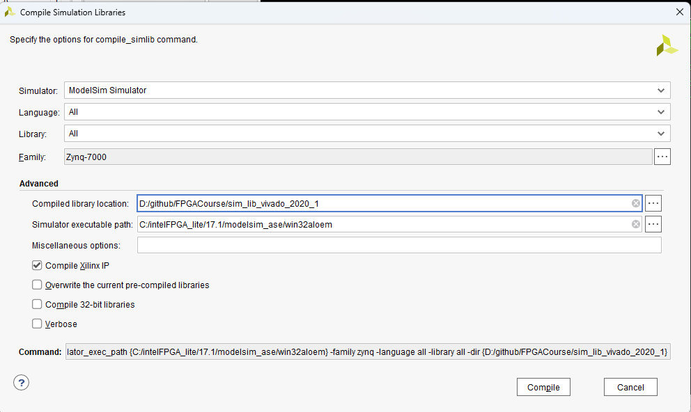
| Option | Setting |
|---|---|
| Simulator | ModelSim Simulator |
| Language / Library | All |
| Family | All (or specific FPGA families used) |
| Simulator executable path | Folder containing vsim.exe, vlog.exe |
| Compiled library location | Writable target directory |
When compilation completes, a modelsim.ini file is generated (which maps library logical names to their compiled physical directories when ModelSim starts up).
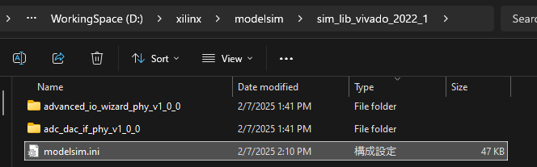
- Compiling all Xilinx IP libraries is compute-intensive and can take up to an hour.
- When testing with ModelSim 10.5b (Quartus 17.1) and Vivado 2020.1, 4 module compilation errors occurred. As long as your specific Vivado design does not instantiate those specific modules, simulation proceeds normally.
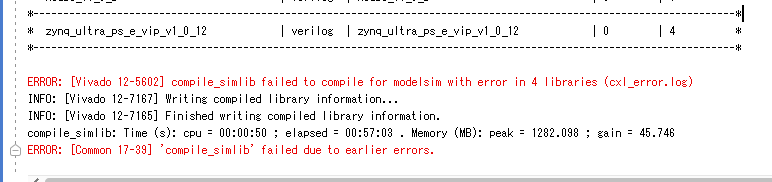
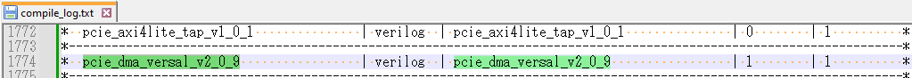
2. Exporting Simulation Scripts
Before executing in ModelSim, verify that the design simulates cleanly in Vivado's built-in xsim (confirming that the testbench functions as expected) to separate testbench/design issues from ModelSim configuration problems.
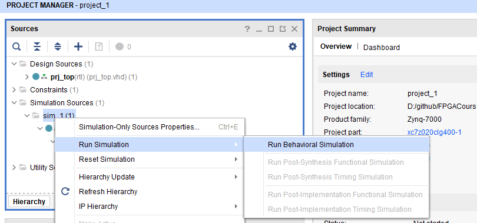
If there are no issues, simulation results will display in the xsim waveform viewer.
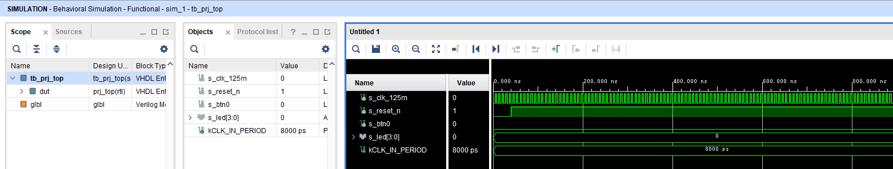
Next, navigate to File → Export → Export Simulation.
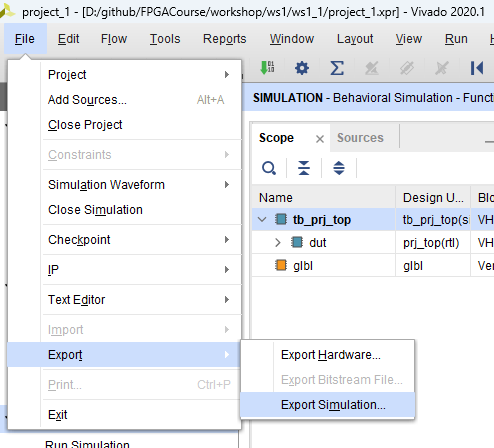
Configure the export settings as follows:
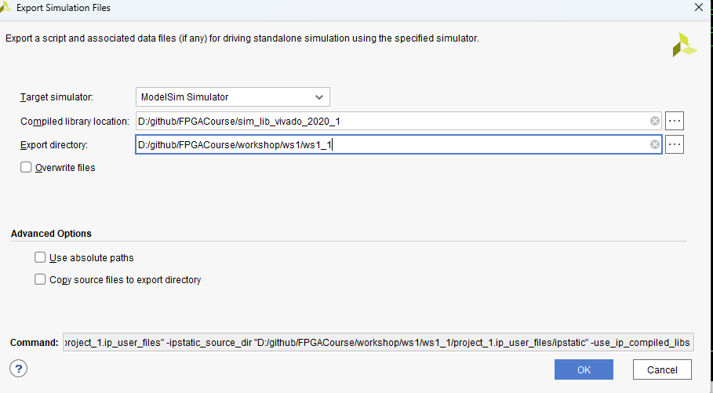
| Option | Description |
|---|---|
| Simulator | Select ModelSim Simulator |
| Compiled library location | Path where libraries were compiled in Section 1 |
| Export directory | Target directory where Vivado exports ModelSim scripts |
Clicking OK generates a modelsim directory containing execution scripts tailored for ModelSim.
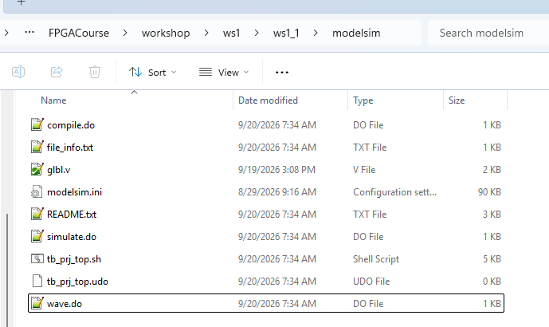
3. Editing the Exported Scripts
3.1 simulate.do — Comment out quit -force; otherwise ModelSim will close immediately upon completing the simulation run, preventing you from inspecting waveforms.
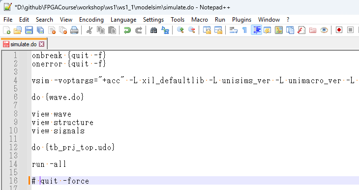
3.2 compile.do — Add vlib modelsim_lib before the lines that create sub-libraries (in some environments, sub-library creation fails if the parent library directory does not yet exist).
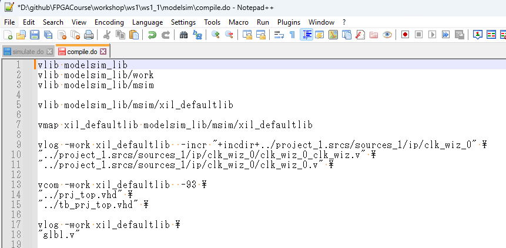
4. Running Simulation in ModelSim
Launch ModelSim and change directory (File → Change Directory) to the exported modelsim folder. Then execute the following commands in the Transcript window:
do compile.do
do simulate.doModelSim will compile all design units and display the simulation waveforms.
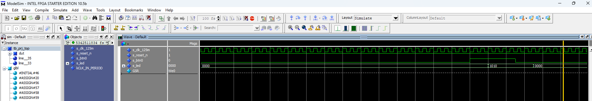